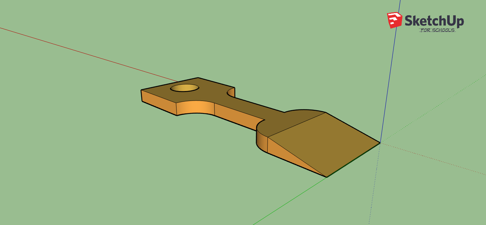
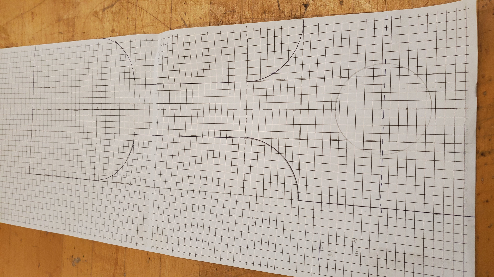
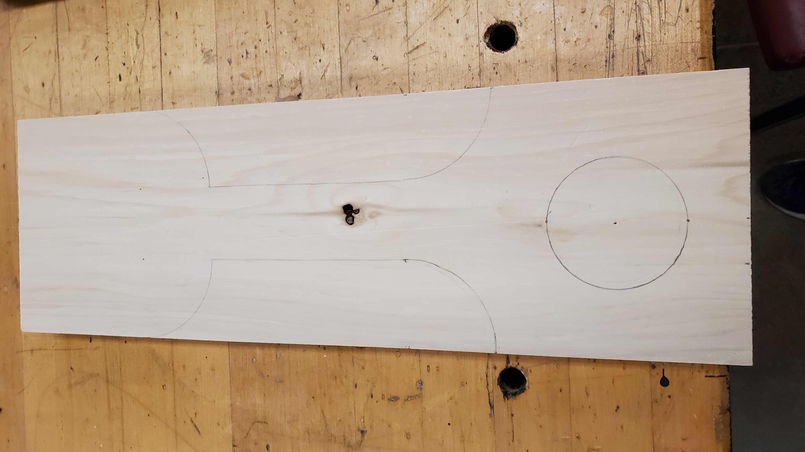
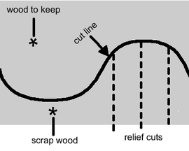
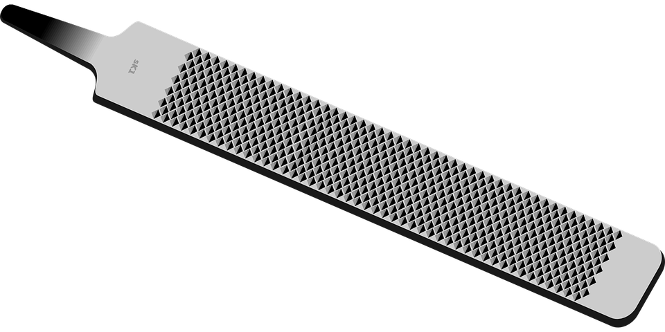
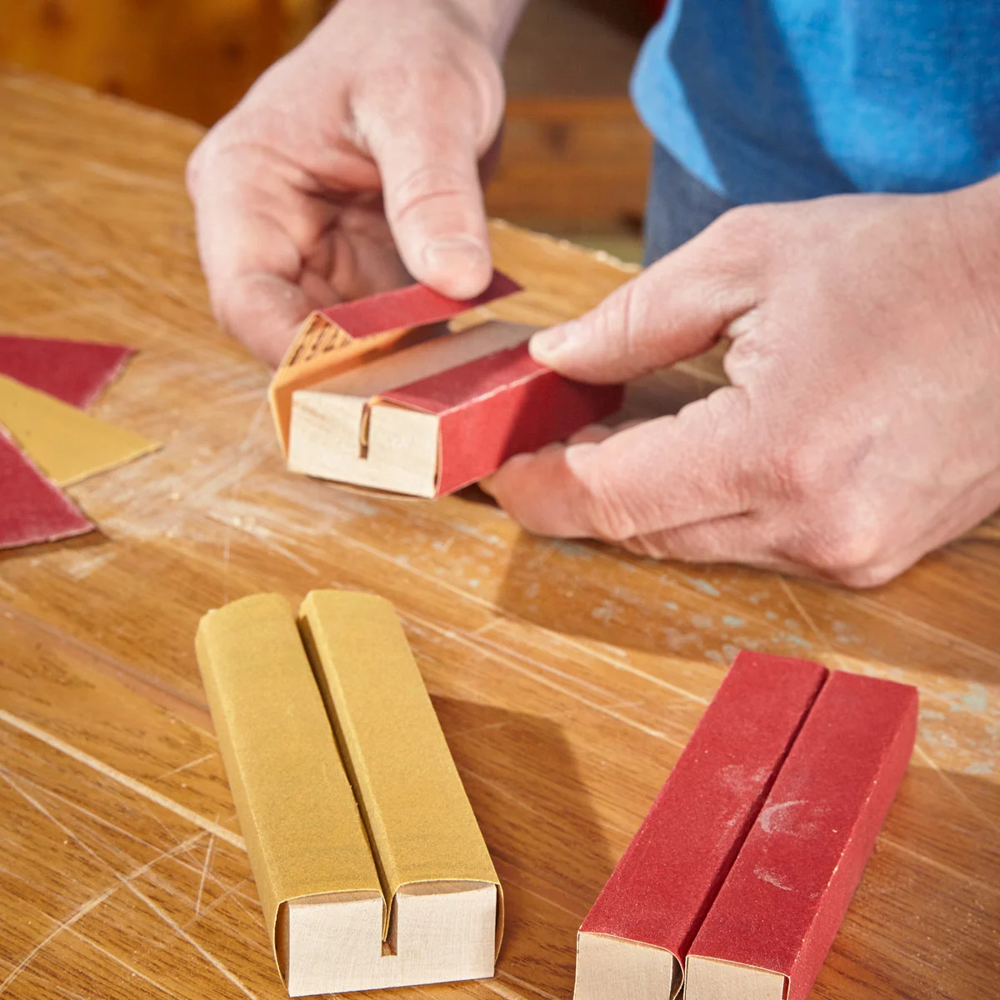
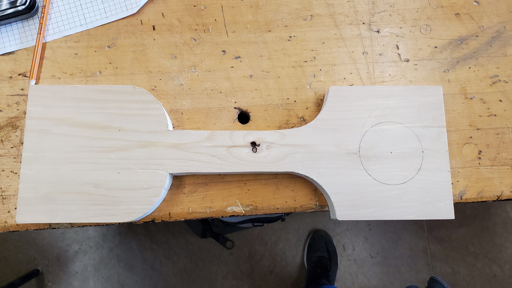

6'' by 2'' by 1'' wooden piece,
file,
sand paper,
paper
There are multiple steps that I took to create the barbeque scraper, which include both planning and execution steps.




If you made a cut always turn off your machine before taking your piece of wood out of the blade as it can hurt the blade and ruin your work. And always use a wooden stick to remove scrap pieces of wood of the table to reduce chance of injury.
After the file, head over to the sand paper. Take a small scrap piece of wood and wrap the sand paper around it. than scrape the sand paper on the sides of the project to smooth it out and to remove the last layer of waste.
This how your project should look up to now.